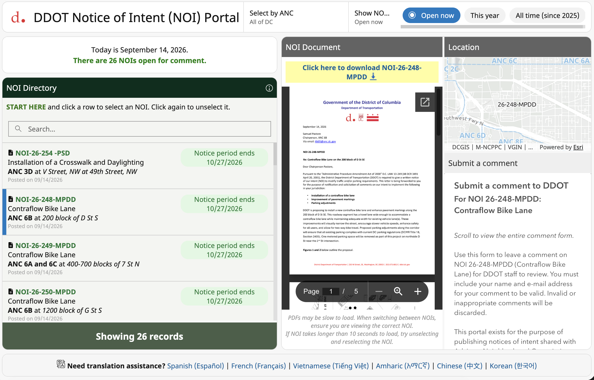

Week 02 | SEPTEMBER 14, 2026
Public interest technology is here to stay.
Reading: McGuinness & Schank, Power to the Public

Web portal for submitting notice of intent for the District of Columbia, I created this portal. Located at noi.ddot.dc.gov
In the digital age, we are constantly surrounded by technology that makes our lives better. Our food is grown, processed, marketed, and delivered more efficiently. We worry less about serious illness. And we can stay connected with family miles away. Yet these technologies, while making the public better off, are not necessarily “civic” or in the “public interest”. They are often motivated by profit in addition to the service or benefit they provide. At its core, public interest technology, according to McGuinness and Schank, is the adoption of modern technology standards in pursuit of the public interest, particularly within government. This is embodied in the “design, data, delivery” framework proposed in Power to the Public. Drawing on principles from private-sector technology practices, public interest technology argues that government is able to provide services just as effectively. I agree, and believe that governments willing to embrace this approach can make meaningful change, a process that may become easier with AI’s rapid adoption across sectors.
Excellent, resident-focused government service is a core principle of public interest technology, and one I experienced firsthand at the District Department of Transportation. My work did sometimes intersect with the broader “civic tech” world – for example, through engaged citizens writing about traffic cameras or bus shelters in heat-exposed locations. But my day-to-day, I served on an Innovation & Performance division using data and technology to solve problems across the agency. In keeping with McGuinness and Schank’s definition, my role was rarely to implement a predetermined product. Instead, I took a user-focused approach to understand the problem, determine the best solution – technological or otherwise – iterate on designs, and support final delivery.s Our solutions were often technological, but just as frequently, a low-tech intervention could solve a problem as well or better. I believe these efforts still constituted public interest technology: we carefully defined problems, assembled the best data available, and delivered solutions intended to improve the public experience. Not all software is public interest, and not all public interest technology is software-based. The technology is ultimately a means to an end: better, more responsive government.
Public interest technology will continue to evolve, although governments can be notoriously slow to adopt technological change because of historical records, disjointed systems and policies, underfunded technology teams, or limited political will. Two developments may help alleviate these obstacles. First, the growing visibility of proactive government teams, such as New York City’s Public Interest Technology Team, demonstrates that investing public resources in better government can be both possible and celebrated. Positive examples may encourage other jurisdictions to make similar investments. Second, AI tools and agentic services are increasingly enabling governments – and residents – to accomplish work that was previously difficult or impossible with limited resources. Tasks such as crosswalking databases, designing interdepartmental data architectures, or developing resident-facing web products can increasingly be supported by AI. At minimum, AI can help government staff identify and implement better practices.
Governments are uniquely positioned to benefit from AI because they possess the data, regulatory authority, and direct relationships with the people they serve. The public sector has long been a recipient of technological change from the outside. With the growth of public interest technology and AI, governments now have an opportunity to embrace technological change from within and use data and technology more effectively for public good.